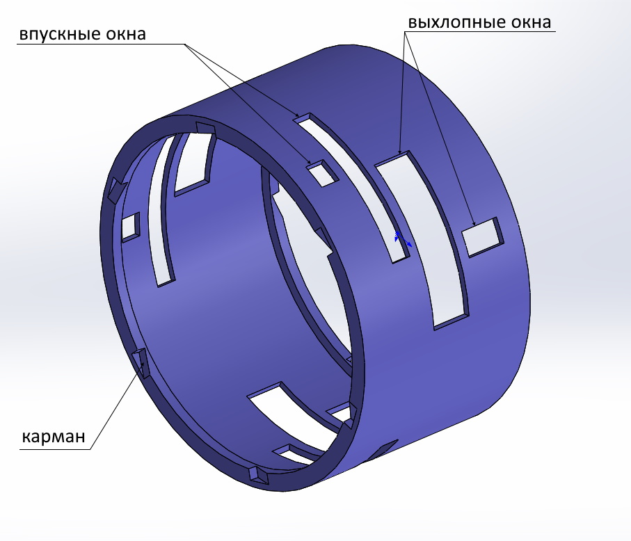
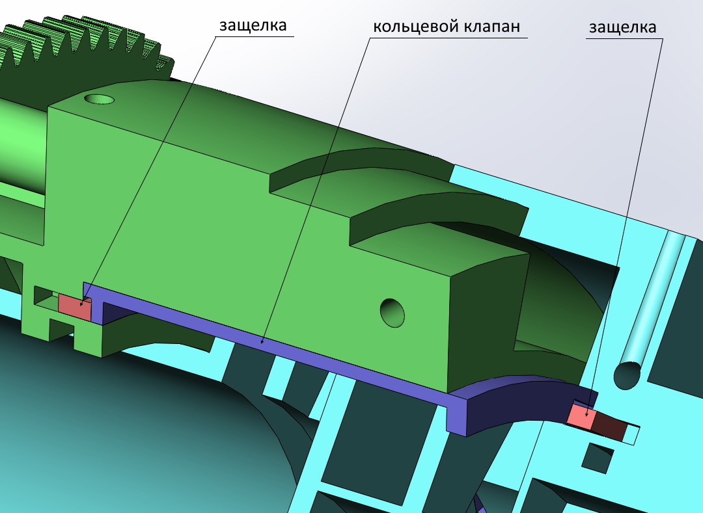
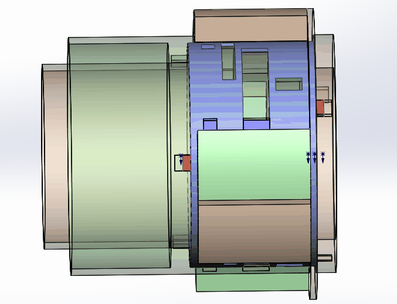
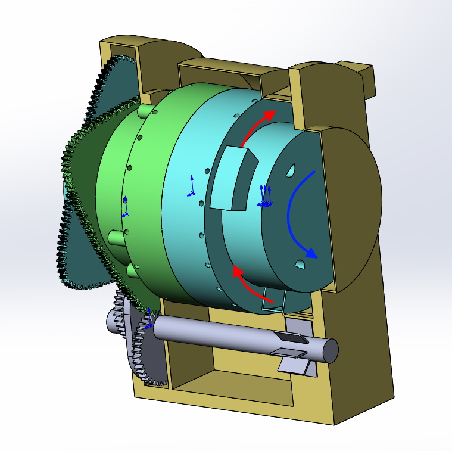
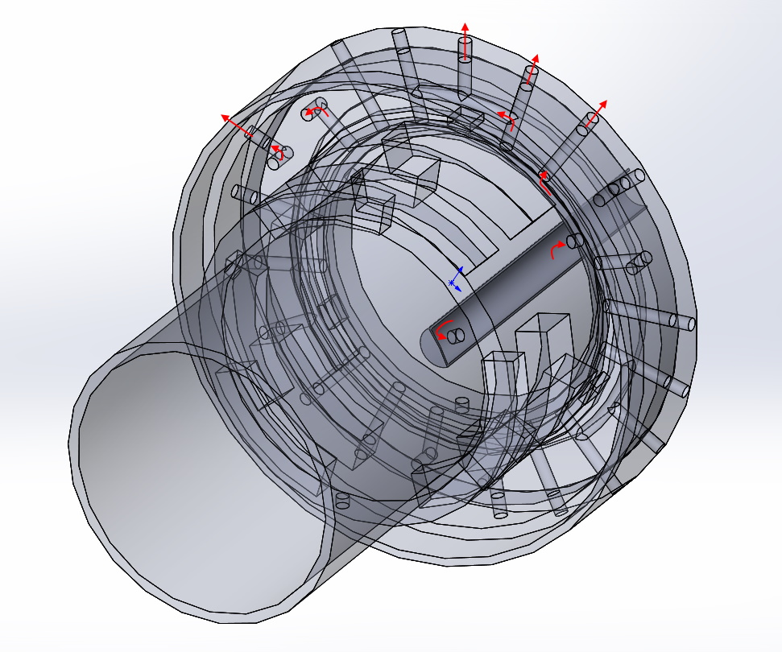
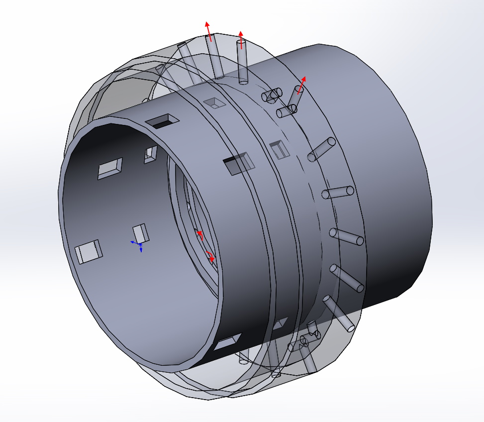
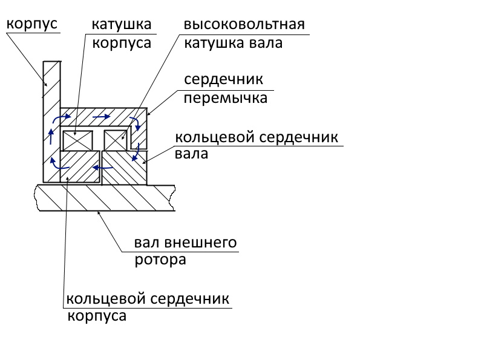

Цилиндры
Для создания камер двигателя применяются установленные соосно цилиндры (роторы) - внешний и внутренний. Цилиндры имеют полые валы. Лопасти установленные в цилиндрах одного цилиндра упираются торцами в стенки второго цилиндра. Внутри соединенных цилиндров образуются замкнутые камеры . Цилиндры соединяются с перекрытием ("в нахлест"). В целом компоновка такая же как у двухтактного двигателя.
Передача
Основой зубчатой передачи является зубчатый вал со смещенными шестернями (ЗКВ).

На полых валах цилиндров установлены зубчатые венцы. Форма эитх венцов может быть различной. В данном примере - венцы треугольные так как одни полный оборот цилиндр совершает за три оборота ЗКВ. Но они могут иметь любую n-угольную форму. Два цилиндра и ЗКВ устанавливаются в корпус. Цилиндры своими зубчатыми венцами входят в зацепление с валом (ЗКВ). В приведенном примере цилиндр совершающий малый ход проворачивается на 30 градусов, а совершающий большой ход на 90. Таким образом относительный ход лопастей (разница большого и малого хода цилиндров) составляет 60 градусов за один оборот ЗКВ и средние скорости лопастей совершающих малый и большой ход находится в соотношении 1:2. По части устройства механической передачи нет отличий от двухтакного варианта. В сборе представлено на картинке.
Газораспределение и цикл
Четырехтактный цикл осуществляется при помощи кольцевого клапана установленного между внутренним и внешним цилиндром.


В клапане есть впускные и выхлопные окна. При вращении роторов и клапана, окна роторов совмещаются с окнами клапана или перекрываются ими. Совместное расположение окон роторов и клапана позволяет организовать
газораспределение для четырехтактного цикла. Клапан зацепляется защелками и вращается всегда совметно с опережающим ротором (с его скоростью). На клапане есть карманы для
зацепления, а в роторах установлены подпружиненные защелки. Вместе они образуют храповый механизм. Карманы имеют пологий выход в одну стороу и ровную грань с другой стороны. Защелки так же имеют клиновидную форму.
Поэтому в моменты когда угловые скорости роторов равны происходит переключение зацепления клапана. Защелка опережающего ротора ровной гранью зацепляет клапан, а защелка отстающего
ротора выталкивается по пологой грани клапана.
На анимации показано движение клапана относительно роторов и закрытие/открытие окон роторов.




Камеры образованные лопастями имеют одно впускное окно и одно выхлопное каждая. Но как показано на рисунках в смежных камерах они расположены на разных линиях так что бы подача горючей смеси и выхлоп могли регулироваться для каждой камеры независимо. Можно обозначить их как камеры первой линии (I) и камеры второй линии (II). Во всех камерах происходит обычный четырехтактный цикл:
- Открытие впуского окна и всасывание горючей смеси (через полый внутренний вал)
- Закрытие впуского окна и сжатие горючей смеси
- Зажигание и рабочий ход (все окна закрыты)
- Открытие выхлопного окна и выхлоп
Во всех камерах происходит такт рабочего хода (нет горячих и холодных камер как у двухтактного варианта). Такты цикла в смежных камерах смещены. Таким образом в смежных камерах (первой лини - I и второй линии - II) такты осуществляются следующим образом (циклически):
| Номер | Такт линии I | Такт линии II |
| 1 | такт рабочего хода | такт выпуска |
| 2 | такт выпуска | такт впуска |
| 3 | такт впуска | такт сжатия |
| 4 | такт сжатия | такт рабочего хода |
Так же как и в двухтактном варианте горючая смесь подается через полый вал внутреннего ротора и всасывается в камеры при открытии соответствующих впускных окон. Выхлоп отводится через выхлопной коллектор проходящий через полый вал внутреннего ротора при открытии соответсвующих выхлопных окон.
Направленный выхлоп
Так как оба ротора вращаются в одном направление целесообразно направить выхлоп в противоположном направлении. Это позволяет использовать часть энергии выхлопа без применения дополнительных устройств (используя только статичные патрубки). Газ из горячих камер через выхолопные окна и выхлопной канал попадает на выхлопные патрубки направленные против вращения роторов. На выхлопных патрубках создается реактивная тяга и вхлоп тем самым совершает дополнительную работу.

Охлаждение и смазка
В валах роторов, лопастях и стенках цилиндров выпонены каналы для протока охлаждающей и смазывающей жидкости. Так как оба ротора вращаются жидкость прокачивается через детали роторов под действием центробежного ускорения (так же как в центробежном насосе). И для охлаждения и для смазки деталей можно использовать машинное масло. Схема охлаждения и смазки такая же как и в двухтактном двигателе. Каналы охлаждения цилиндров показаны на картинках ниже.


Жидкость проходя по каналам улавливается внешним кожухом и возвращается к гидронасосу подающему её снова в каналы внутреннего ротора (проходя при необходимости через радиатор и маслофильтр - не показаны на схемах). Происходит циркуляция охладителя. Таким образом все части двигателя возможно интенсивно охлаждать. Центробежное охлаждение позволяет поднять температуру в камерах сгорания. Кроме того, наличие каналов уменьшает сухой вес двигателя. Смазку возможно выполнить деалая дополнительные ответвления от охлаждающих каналов к трущимся поверхностям. Тут каналы смазки не показаны, что бы не усложнять описание. Из схем видно, что все контактирующие поверхности достижимы для смазки. На внешней поверхности лопастей (по контуру) можно выполнить внешние каналы (не описано в патенте). При соединении цилиндров канал лопасти одного цилиндра закрывается снаружи внутренней стенкой другого цилиндра. Образуются "трубки" (внешняя станка "трубки" - подвижная) по которым может течь жидкость омывая внутренние стенки обоих цилиндров. В отличие от двухтактного варианта в четырехтактном двигателе лопасти не пересекаются с какими либо окнами. Поэтому каналы лопастей не прерываются и есть возможнотсть омывать всю внутреннюю поверхность цилиндров. Это позволяет и смазывать и охлаждать поверхности цилиндров непосредственно соприкасающиеся с продуктами горения. При этом жидкость не будет забрасываться в камеры так как благодарая ценробежному ускорению будет сбрасываться через каналы во внешний кожух.
Зажигание
Для поджига грючей смеси на внешнем роторе для каждой камеры установлены свечи зажигания. Запитать свечи можно как контактным, так и бесконтактным способом. В патенте подробно не рассматривается вопрос питания свечей. Тут представлен вариант бесконтактного питания (такой же как и для двухтактного двигателя).

На корпусе расположен кольцевой сердечник на который намотана катушка (стационарная). На внешнем валу так же расположен средечник с намотанной на него высоковольтной катушкой. Она вращается вместе с внешним валом. Для замыкания магниного потока установлен сердечник перемычка. По сути получается обычный трансформатор, передающий энергию на высоковольтную катушку без электрических контактов. Стрелками показано замыкание магнитного потока. Зазоры в магнитной системе возможно выполнить минимальными так как элементы магнитной системы не несут высокой механической нагрузки. Далее от высоковольтной катушки к свечам зажигания питание подется по проводу проложенному по ротору внешнего вала. Момент зажигания может определяться внешним блоком управления (не рассматривается).
Заключение
Особенности конструкции придают ему свойства не достижимые для поршневого варианта:
- - направленный выхлоп позволяет использовать часть энергии выхлопа для повышения полезной работы двигателя без дополнительных утройств
- - центробежное охлаждение позволяет интенсивно охлаждать все части двигателя включая лопасти. Это позволяет сжигать больше топлива в единицу времени (что то калорийнее бензина, горючие смеси с большей температурой горения). Т.е. позволяет повышать мощьность и "оборотистость" двигателя.
- - все части можно хорошо смазывать.
- - можно охлаждать и смазывать поверхности камер непосредственно контактирующие с продуктами сгорания.
- - большинство контактов деталей - концентрические. При подведении смазки они будут работать как подшипники скольжения имея минимальные потери на трение.
- - Все усилия и колебания возникающие при ускорениях роторов "замкнуты" по кругу. Это снижает вибрации позволяя делать высокооборотистые двигатели.